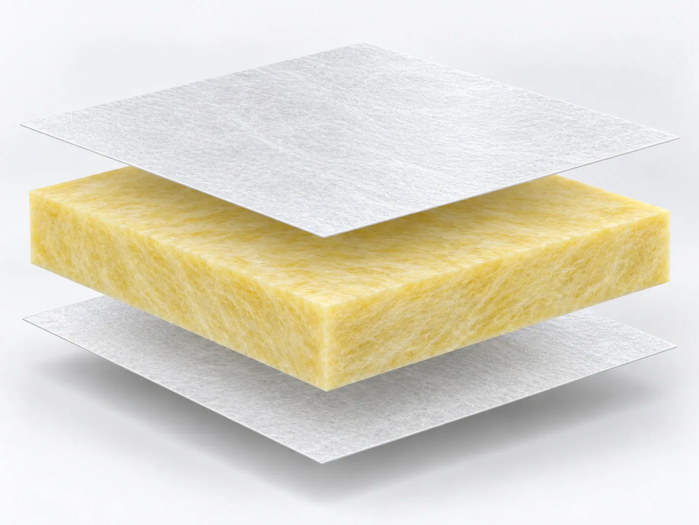
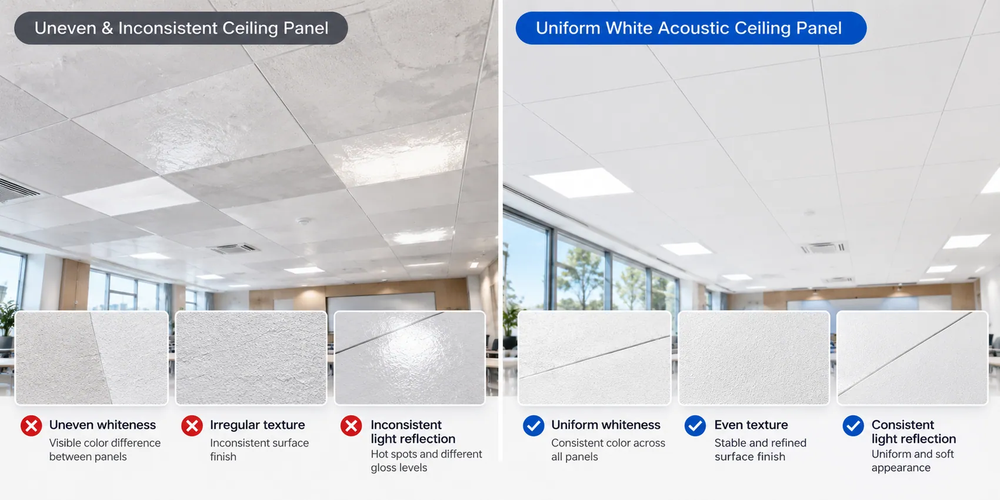
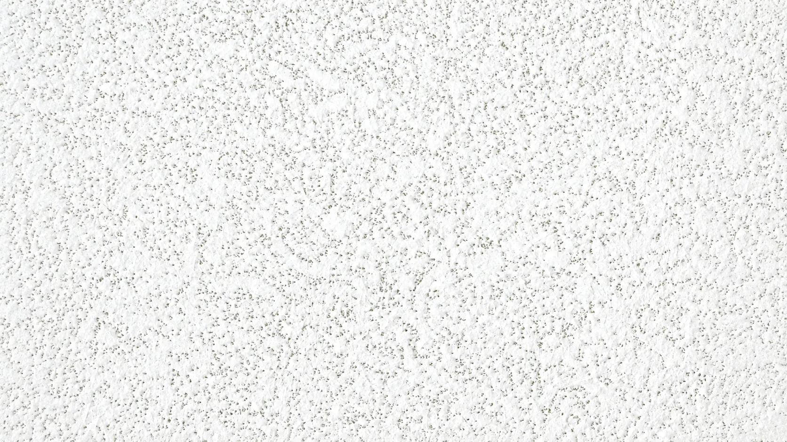
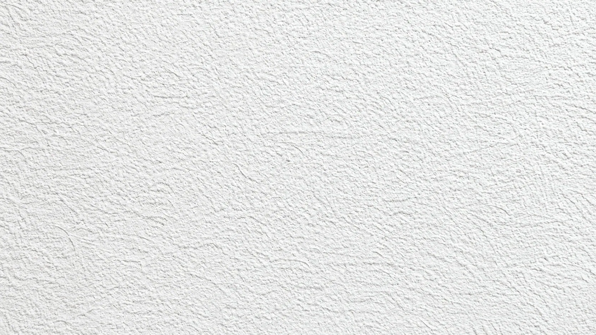
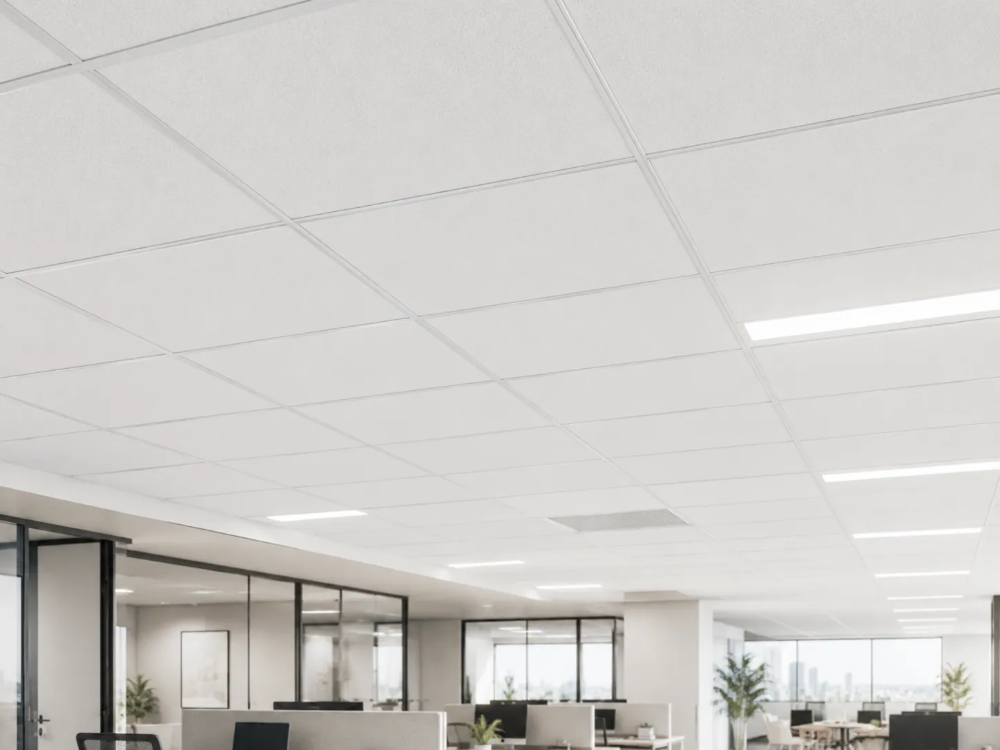

01 — Color consistency
Uneven whiteness can create visible differences between adjacent panels.
01 — HERO
A white coated fiberglass veil for mineral wool and glass wool ceiling panels. Select the finish, coverage and airflow around your acoustic core and production process.
Key highlights:

02 — WHAT AFFECTS THE FINISHED CEILING?
Small facing differences can become visible across a large ceiling. Review these factors before selecting the material.
Uneven whiteness can create visible differences between adjacent panels.
Fiber distribution and coating texture influence the consistency of the finished surface.
Texture and coating variation may appear under the same lighting conditions.
Unsuitable permeability may restrict airflow into the acoustic core and influence finished-panel sound absorption.

03 — MATCH THE FACING TO YOUR PANEL
The white coating and fiberglass substrate contribute different properties. Consider them together when balancing appearance, acoustic compatibility and processing.
A controlled coating helps reduce visible variation in the underlying core color.
The veil structure and surface treatment help produce a uniform finish.
Select permeability around the acoustic core and the intended sound absorption requirements.
Consistent substrate and coating properties support converting, cutting and lamination.
04 — CHOOSE A SURFACE FINISH
Three surface finishes offer different visual effects. Review a physical sample against the desired ceiling appearance and manufacturing requirements.
A fine, evenly coated surface with minimal visible texture for a clean, minimalist ceiling.

Fine coating dots add subtle visual depth while maintaining consistent white coverage.

A fine, sand-like texture gives the panel a more pronounced decorative surface.
06 — FACING AND CORE WORK TOGETHER
The facer is the visible surface layer over a mineral wool or glass wool core. Its role is to provide the finish without replacing the core's sound-absorbing function.

A lightweight fiberglass substrate with a uniform white coating supplies surface coverage and texture.
Mineral wool or glass wool provides the panel's primary sound-absorbing structure.
The facing material and acoustic core must be evaluated as a complete panel system to achieve the desired balance between appearance and sound absorption.
07 — SELECT COVERAGE AND AIRFLOW
Surface finish and facing grade answer different needs. Consider the core color, coverage requirement and airflow resistance when selecting a grade.
For conventional mineral wool and glass wool ceiling panels requiring a consistent white finish and suitable airflow.
For darker cores or panels where the underlying color and texture need to be less visible.
For panel configurations in which facing airflow resistance is a key acoustic design consideration.
08 — TECHNICAL SPECIFICATIONS
Use the table to identify a starting material configuration, then confirm the grade and requirements for your production process.
| Parameter | Specification |
|---|---|
| Product | White Acoustic Ceiling Facer |
| Base Material | Fiberglass Veil |
| Surface Treatment | White Coating |
| Color | White |
| Surface Finish | Fine, Uniform Texture |
| Weight | 80g/㎡~260g/㎡ |
| Roll Width | 1.2m~2.5m |
| Air Permeability | Grade-Dependent |
| Surface Coverage | Standard / High-Hiding |
| Compatible Core | Mineral Wool / Glass Wool |
| Supply Form | Rolls |
| Customization | Width, Weight, Coating and Surface Properties |
Technical specifications, tolerances, and test results vary by product grade. Contact GRECHO for the appropriate technical datasheet.
09 — ACOUSTIC CEILING APPLICATIONS
Select the facing as part of the finished ceiling-panel construction.
Required 09 — APPLICATIONS / 01 — Mineral Wool Ceiling Tiles.
The supplied image is not used in this slot.
White facing for panels used in offices, educational facilities and commercial interiors, with surface consistency and manufacturing needs considered together.
Required 09 — APPLICATIONS / 02 — Glass Wool Acoustic Panels.
The supplied image is not used in this slot.
A lightweight white surface with airflow characteristics selected for the finished acoustic panel.

Decorative sound-absorbing panels requiring a clean, coordinated white appearance.
10 — VALIDATE BEFORE PRODUCTION
Use your own panel structure and lamination process for the evaluation.
Share the core material, panel dimensions, surface expectations and technical targets.
Compare whiteness, texture, coverage and the relevant facing properties.
Test the selected material with your lamination process and complete panel construction.
Agree the facing grade, roll dimensions, technical requirements and supply arrangements.
11 — BUYER QUESTIONS
Yes. Airflow resistance can influence complete-panel performance. Select and test the facing with the acoustic core.
They offer different surface coverage. Selection depends on the core color and the required finished appearance.
Roll width, basis weight, coating and surface properties may be considered, subject to the product grade and manufacturing feasibility.
12 — REVIEW A FACER FOR YOUR CEILING PANEL
Share your core material, surface target and production requirements to discuss a suitable facing grade and sample evaluation.